In this section we will develop code to solve a very simple DAE system using DASSL.
The physical process we are modeling is a pair of first-order chemical reactions in series occurring in an ideal batch reactor:
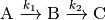
The governing equations for this process are the system of first-order ordinary differential equations
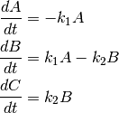
where  is time,
is time,  ,
,  , and
, and  represent the
concentration of each species, and 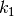 and 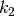 are rate
coefficients for each chemical reaction. The initial condition is pure A, i.e.
represent the
concentration of each species, and 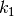 and 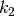 are rate
coefficients for each chemical reaction. The initial condition is pure A, i.e.
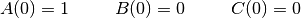
For the purposes of this example we are not interested in units.
Rewrite your DAE system in general form. The general form of a DAE system is 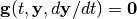. Since our governing equations are explicit first-order ODEs, this is very easy:
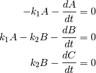
Most DAE systems should be expressible in general form, though some manual transformations may be required.
Import the solver class from the pydas module. This is done with a single import statement:
from pydas import DASSL
Create a new class that derives from the chosen solver class. The use of a class for this purpose enables you to store variables needed by the residual and/or Jacobian functions as attributes of the class. In this example we will need to store the rate coefficients and . Here we provide an __init__() method to easily set these values. A docstring describing the purpose of the class is always a good idea.
class Model(DASSL):
"""
A model of first-order irreversible reactions in series
A -> B -> C
occurring in a batch reactor. In such a system the concentration
of the intermediate B has a maximum that depends on the relative
rate constants `k1` and `k2`. These are stored as data members of
the class so that they are available to the residual function.
"""
def __init__(self, k1=0.0, k2=0.0):
self.k1 = k1
self.k2 = k2
Write the residual method for that class. The residual() method is automatically called by the solver, and is used to compute the value of.

The method provides three parameters in addition to the self object: the independent variable t, a float; the vector of dependent variables y, a numpy array of floats; and the first derivatives dydt, a numpy array of floats. The method expects two return variables: a numpy array of floats containing the value of 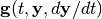 corresponding to the input parameters, and a integer status flag, having a value of 0 if okay or -2 to terminate the simulation. Our residual() method reflects the general form of the DAE system:
def residual(self, t, y, dydt):
delta = numpy.zeros(y.shape[0], numpy.float64)
delta[0] = -self.k1 * y[0] - dydt[0]
delta[1] = self.k1 * y[0] - self.k2 * y[1] - dydt[1]
delta[2] = self.k2 * y[1] - dydt[2]
return delta, 0
Note that you need an import numpy statement in your module for the above to run.
(Optional) Write the jacobian method for that class. The jacobian() method is used to specify the analytical Jacobian corresponding to the residual function. The Jacobian is the matrix of partial derivatives with elements given by
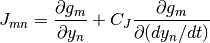
In addition to the same t, y, and dydt parameters as the residual() method, the jacobian() method also has a fourth parameter: a float cj to be used to scale the derivative components in the Jacobian matrix. For our system the Jacobian is not too difficult to generate:
def jacobian(self, t, y, dydt, cj):
pd = -cj * numpy.identity(y.shape[0], numpy.float64)
pd[0,0] += -self.k1
pd[1,0] += self.k1
pd[1,1] += -self.k2
pd[2,1] += self.k2
return pd
If not specified, the solver will evaluate an approximate Jacobian numerically. For many problems this is enough, which is good because it can be time-consuming to generate an analytical Jacobian. The use of analytical or numerical Jacobian is detected and configured automatically by PyDAS; all you need to do is to provide or omit the jacobian() method.
Create an object of your derived class. Since we designed our __init__() method to accept the rate coefficients, we can easily set them to the values we want. For this tutorial we will use 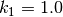 and 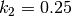.
model = Model(k1=1.0, k2=0.25)
Initialize the model with the initial conditions and solver options. The initial conditions follow directly from the equation above:
t0 = 0.0; y0 = numpy.array([1.0, 0.0, 0.0], numpy.float64)
Since we are using a DAE solver, we also need initial values for the
first derivatives  . These initial values must be
consistent with those of and
. These initial values must be
consistent with those of and  . It is best if
you can determine the initial values of manually,
as we can in this example:
. It is best if
you can determine the initial values of manually,
as we can in this example:
dydt0 = - model.residual(t0, y0, numpy.zeros(3, numpy.float64))[0]
model.initialize(t0, y0, dydt0)
If you cannot do this manually (or simply have no idea how), you can simply omit it; DASSL will then try to estimate it for you. Note that this is not always successful.
model.initialize(t0, y0)
You can also use the initialize() method to specify absolute and relative tolerances for the solver to use, either as scalars or numpy arrays. Below we use scalars:
model.initialize(t0, y0, dydt0, atol=1e-16, rtol=1e-8)
Default values will be used if not specified.
The initialize() method of the solver class must always be called before attempting to integrate.
Integrate forward using advance or step. After initialization, the
current values of and 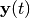 are available from
the t and y attributes of the solver object. In order to conduct the
integration, call the advance() or step() methods of the solver
object. The advance() method integrates forward until the time
specified as the parameter is reached; the t and y attributes then will
contain the solution at that time. The step() method integrates such
that one automatically-determined step is taken towards the specified
parameter, which is usually the end time of the simulation; when finished,
the t and y attributes will contain the solution at the end time of that
step. Here we will use the step() method:
# Initialize solution vectors
t = []
y = []
# Set maximum simulation time and maximum number of simulation steps to allow
tmax = 16
maxiter = 1000
# Generate the solution by stepping until tmax is reached
# This will give you the solution at time points automatically selected
# by the solver
iter = 0
while iter < maxiter and model.t < tmax:
model.step(tmax)
t.append(model.t)
# You must make a copy of y because it is overwritten by DASSL at
# each call to step()
y.append(model.y.copy())
# Convert the solution vectors to numpy arrays
t = numpy.array(t, numpy.float64)
y = numpy.array(y, numpy.float64)
Note that we must keep track of the solution ourselves, as each call to advance() or step() causes the the t and y attributes to be overwritten. (In particular, we must copy y because it is a numpy array.) We must also provide the test that the end time of the simulation is reached, as this is not done for you. Finally, we convert the solution data to numpy arrays for easier postprocessing.
The complete code for this tutorial can be found in the rxnSeries DASSL example. Running this code should produce the following plot (assuming you have matplotlib installed):